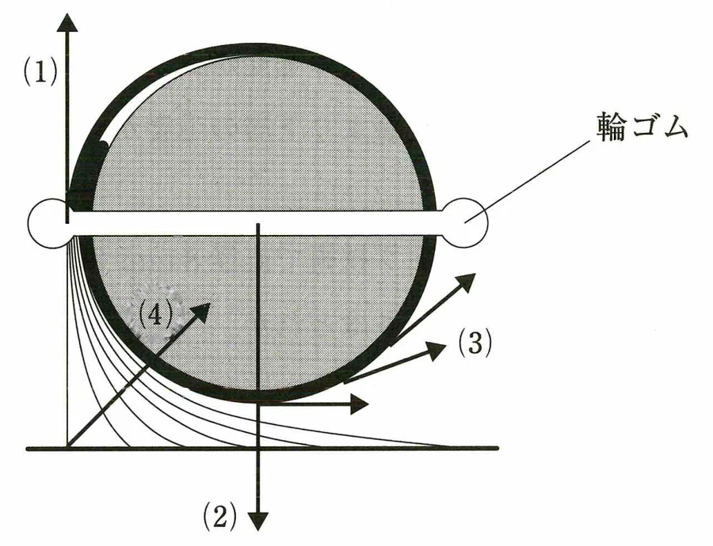

第54回 問50
- 図の中の選択肢(4)に正答の〇印が描かれていたため、画像処理で消した。消し跡（点線の輪）が残っていたので、2026-11-14 に周りの網点で埋め直した。跡が分からないか目視確認が必要
元のページ画像

raw/pages/54-024.png
切り出し・〇印消去後

public/images/54/54-50.webp
登録した内容
下図は、ロッドにかかる力を表したものである。この図の中で、毛束を止めた部分から毛根までの毛が弾力でロッドの重みに反発する力を表している矢印はどれか。
- (1)の矢印
- (2)の矢印
- (3)の矢印
- (4)の矢印 ← 正答として登録